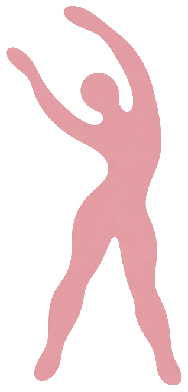

Leyla Fıratlı · Breathwork Therapist & Mind-Body Practitioner
All that you need to feel free and alive is within you
Breathwork therapy and mind-body medicine for chronic pain, anxiety, panic and all the ways your body learns to protect you. Group sessions online. Rooted in embodied social justice and decolonial healing.

Is this you?
This work could be for you if…
- you've been told you'll just have to live with your pain
- your scans show nothing, or nothing that explains how much it hurts
- you are experiencing anxiety or panic and nothing you've tried has set you free
- you've tried physio, medication, supplements, therapy and yoga and still don't feel like yourself
- you feel the injustice of the world in your body, every single day
- you're tired of leaving your politics at the door in wellness spaces
If you recognised yourself in even one of these, you might be in the right place. Start with a free class →
Podcast episode
Hear from me
I joined Suks on the Inspire Breathwork Podcast to talk about chronic pain in an unjust world, mind-body medicine, and how we stay well when everything around us is collapsing.

Free 50-minute class
Start with the free class
I share my story, explain how your nervous system can get stuck in protection, and how that can show up as chronic pain, anxiety or panic. I'll help you tell whether this might be happening for you, and leave you with a roadmap and tools to start working with it.
Each time we reconnect with our bodies, the systems that thrive on our disconnection lose their grip.
Breathwork therapy for chronic protection
A 5-week online group program for chronic pain, anxiety, panic and all the ways your body has learned to protect you.

My approach
Three values that shape my work
Your pain makes sense in an unjust world.
Your symptoms are an intelligent response to the systems we are living in.
You are the authority on your body.
My role is to support you and get you to a place where you won't need me.
Personal freedom is collective freedom.
When we reclaim our bodies, we loosen the grip of systems that profit from our disconnection.
About me
I found myself through this work many times.
At 12, I was diagnosed with advanced scoliosis. Doctors told me I'd either live in pain my whole life or have surgery to rearrange my spine, and I grew up afraid of my own body. In 2024, pain from my lower back down my leg left me barely able to walk for almost a year. Back home in Akyaka, on the Aegean coast, I found Dr. John Sarno's work, turned toward my pain instead of fighting it, and found my freedom. Now I walk alongside people on the same path.

In their words
TODO: real testimonial quote goes here.TODO first name
TODO: real testimonial quote goes here.TODO first name
TODO: real testimonial quote goes here.TODO first name
FAQ
Questions you might have
Not sure if this fits you? These are the questions people ask most, and an intro call is always a good place to start.
What is a mind-body approach to chronic pain?
A mind-body approach to chronic pain understands that not all pain is caused by structural damage. We see pain as the way our nervous system communicates with us. We listen to this communication by using mind-body connection tools, somatic awareness and breath.
Do you only work with chronic pain?
No. I work with chronic pain, anxiety, panic attacks and other symptoms that come from a nervous system stuck in protection. I call this chronic protection. Pain, anxiety and panic can look very different, but they often come from the same place: a body that learned it wasn't safe and hasn't yet learned it can let go.
Do I need to see a doctor first?
We recommend having a doctor rule out serious medical causes. Knowing that you don't have anything serious going on with your body will help you connect with mind-body work in a deeper way.
How do I know if my pain might be mind-body?
Common signs include pain that moves around, changes with stress or emotions, began during a hard period of life, or doesn't match what your scans show. An intro call is a good place to explore whether this approach fits you.
What happens in a session?
We talk about your pain and your life, learn how pain works, and practice breathwork, somatic awareness, and reflective tools you can keep using on your own.
Can we work together online?
Yes. All my sessions are online, so you can work with me from anywhere. I also give in-person workshops as I move around the world, in Türkiye, the US, the UK and beyond.
What does a decolonial approach to chronic pain mean?
It means understanding your pain in the context of the world you live in, questioning the idea that only medical and therapy systems hold authority over your body, and supporting you to reclaim trust in your own.
How do we stay well in a world that is collapsing?
We need everyone for the world we're building. This work is how we bring people back, and your body has been waiting to be heard.
